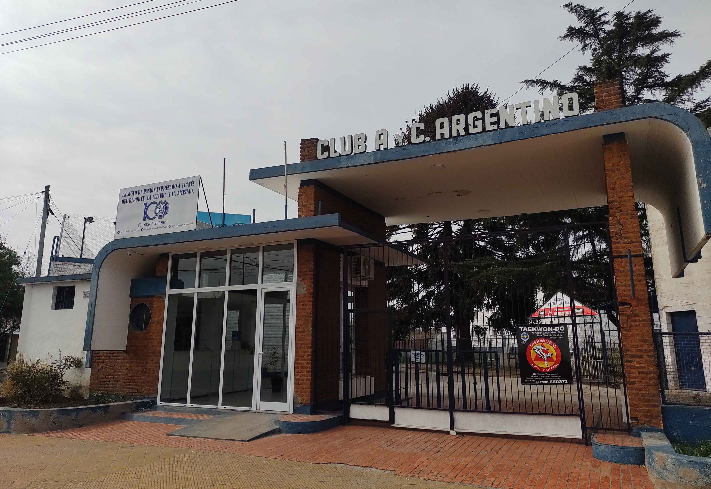

HISTORIA

El Club Atlético y Cultural Argentino fue fundado el 1 de agosto de 1920 en la ciudad de General Pico, La Pampa. Su origen estuvo ligado a un grupo de jóvenes alumnos de la Escuela N.º 64, quienes practicaban fútbol en terrenos cercanos al ferrocarril y decidieron organizarse para formar una institución deportiva.
Una de las primeras acciones del nuevo club fue la construcción de una cancha de fútbol en el sector conocido actualmente como “El Volcán”, en el barrio Pacífico. Desde sus comienzos, el fútbol ocupó un lugar central en la vida de la institución, aunque con el paso de los años el club fue incorporando nuevas actividades deportivas y sociales.
En 1926, Cultural Argentino fue uno de los clubes fundadores de la Liga Pampeana de Fútbol, participando del primer campeonato oficial de Primera División disputado ese año. Su primer partido oficial fue frente a Racing Club de Eduardo Castex.
Durante las décadas siguientes, el club tuvo una destacada trayectoria en el fútbol pampeano. Uno de sus períodos más exitosos se produjo entre las décadas de 1940 y 1950, cuando obtuvo varios campeonatos de la Liga Pampeana. Entre 1952 y 1954 logró tres títulos consecutivos y posteriormente volvió a consagrarse en 1956, 1957, 1958 y 1959, consolidándose como uno de los grandes protagonistas del fútbol de la región.

La historia de Cultural Argentino también está estrechamente relacionada con la identidad de General Pico y, particularmente, del barrio Pacífico. A lo largo de sus más de cien años, la institución fue desarrollándose no solamente como espacio deportivo, sino también como lugar de encuentro, sociabilidad y participación comunitaria.
En tiempos más recientes, el club continuó ampliando su propuesta deportiva. Actualmente participa en fútbol infantil, divisiones inferiores, fútbol femenino, Primera División B y fútbol de veteranos, manteniendo su actividad como una institución deportiva y social importante de la ciudad.
El 1 de agosto de 2020, Cultural Argentino cumplió 100 años, alcanzando un siglo de historia ligado al deporte, la comunidad y la identidad de General Pico.